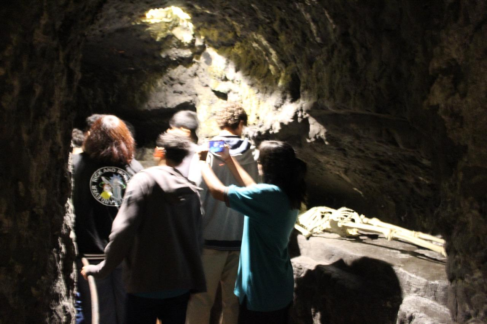
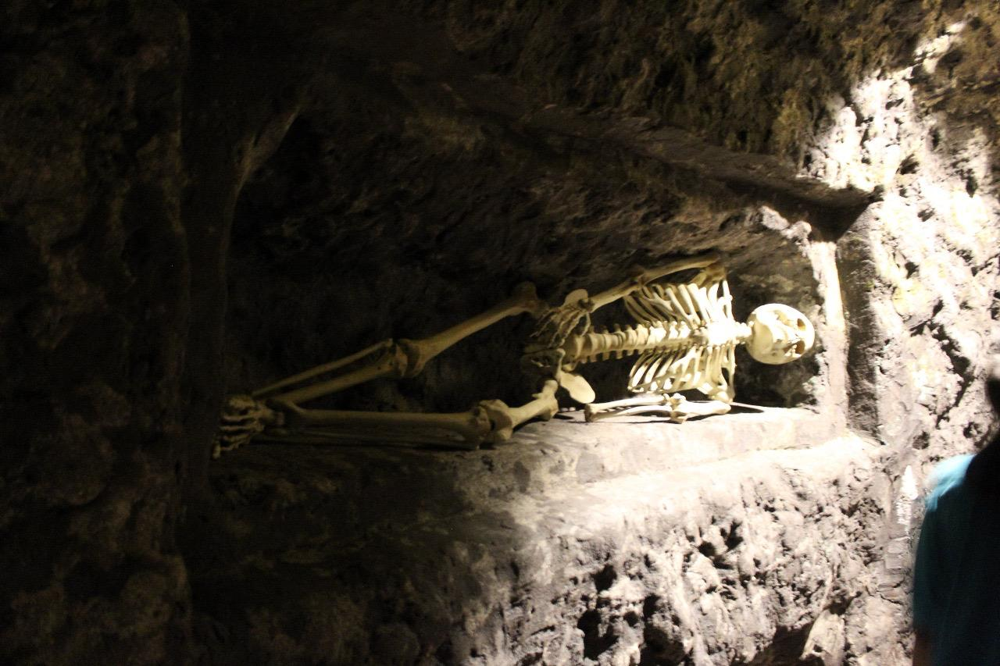

Las catacumbas son unas galerías subterráneas que algunas civilizaciones mediterráneas antiguas construyeron y utilizaron como
lugar de enterramiento. Las más conocidas y las mejor estudiadas son las catacumbas de la ciudad de Roma.
También son conocidas las catacumbas de París, aunque su origen (siglo XVIII) y rituales son muy distintos.
Las catacumbas de la ciudad de Roma fueron excavadas en el suelo para organizar en ellas los enterramientos de los muertos de
los primeros cristianos en la Roma del siglo II. Se empezó a llamar con este nombre a la cripta del cementerio de San Calixto;
se llamó ad catacumbas, y en la Edad Media, por extensión, aplicaron el nombre al conjunto de enterramientos hechos en el
subsuelo del campo romano que formaba alrededor de la ciudad una inmensa necrópolis. También se llamó a las catacumbas Roma
subterránea. Estos subterráneos fueron en limitadas ocasiones lugar de culto, pero principalmente de enterramiento.
Historia
✦ . ⁺ . ✦ . ⁺ . ✦
El sistema de enterramiento en galerías y cámaras subterráneas no es exclusivo de los cristianos, pues hay precedentes en otros
pueblos y otras culturas. Hay constancia de que en el siglo I existía este tipo de enterramiento entre los hebreos y sin embargo
las catacumbas cristianas como tales datan de la primera mitad del siglo II. Los primeros cristianos seguidores de Cristo que
vivían en Roma en número reducido sepultaban a sus muertos según era costumbre en necrópolis al aire libre. Lo más probable es
que pasado el tiempo los nuevos cristianos se asociaran siguiendo así también la costumbre pagana de formar collegia o grupos
privativos.
Las catacumbas eran esencialmente cementerios. Sus estrechas galerías no servían para organizar reuniones ni ceremonias religiosas
aunque ocasionalmente se celebraba algún acto conmemorativo ante una determinada tumba. Pero en tiempos de Decio y Valeriano
corrió el rumor de que los cristianos aprovechaban las catacumbas para reuniones clandestinas y conspiraciones y por eso el
emperador Valeriano procedió a su confiscación. Fueron devueltas en el año 260. Más tarde ocurrió lo mismo en tiempos de
Diocleciano; él mismo las restituyó sin límite de fecha en el año 311, antes del Edicto de Milán.
Después del año 313 se empezó a apreciar una disminución de los enterramientos en cámaras y galerías subterráneas hasta que por
último finalizaron del todo en el siglo V. A partir de ese momento y ya sin el uso original sólo se las tuvo en cuenta como
lugares respetables de recuerdo y peregrinación. Pasados los años desapareció hasta su recuerdo y en el siglo IX ya no había
memoria de ellas. Así habría continuado la historia de no haber sucedido un hecho fortuito: En 1578 fueron descubiertas por
unos obreros que estaban trabajando en la extracción de puzzolana. Ante este descubrimiento el arqueólogo
Antonio Bosio (1575-1629) comenzó su estudio con gran interés. Pero fue en el siglo XIX cuando verdaderamente hubo un
estudio sistemático y profundo por parte de otro gran arqueólogo llamado Giovanni Battista de Rossi (1822-1894) que en 1864
publicó el primer volumen de su Roma sotterranea cristiana («Roma subterránea cristiana»). En el siglo XX siguieron
apareciendo más galerías de catacumbas en las afueras de Roma: catacumbas de los Aurelios en Viale Manzoni, descubiertas en
1919; catacumbas de la Vía Latina en 1955.
